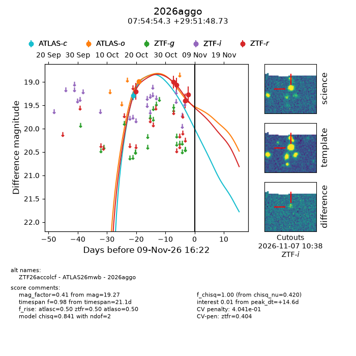
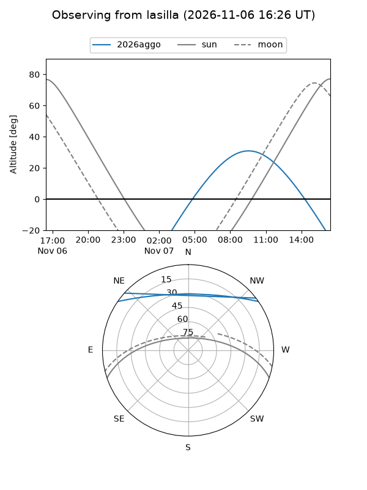
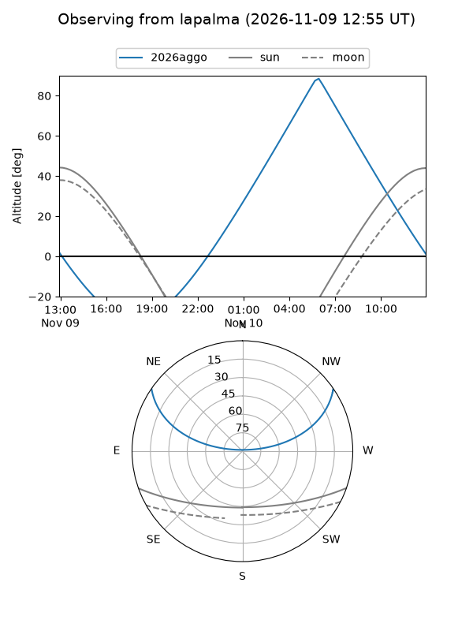
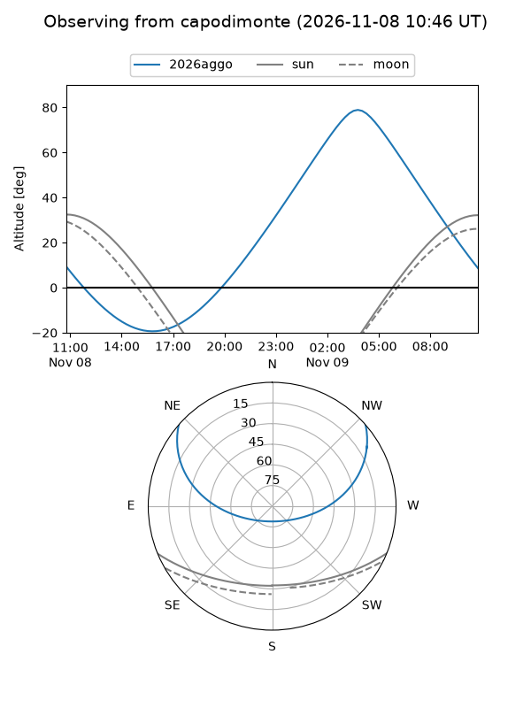
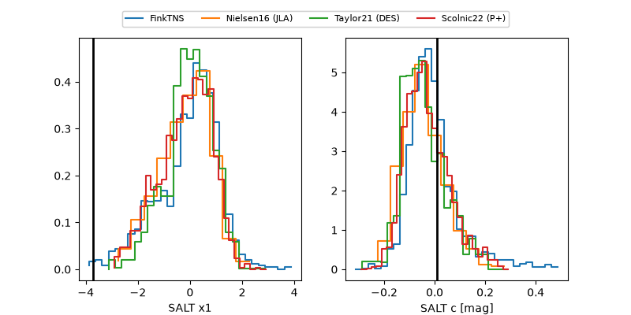

2026aggo
Target 2026aggo at 2026-11-09 16:24
Aliases and brokers:
FINK-ZTF: ztf.fink-portal.org/ZTF26accolcf
Lasair-ZTF: lasair-ztf.lsst.ac.uk/objects/ZTF26accolcf
ALeRCE-ZTF: alerce.online/object/ZTF26accolcf
YSE-PZ: ziggy.ucolick.org/yse/transient_detail/2026aggo
TNS name: wis-tns.org/object/2026aggo
Direct TNS query: direct search
alt names
ZTF26accolcf (ztf,fink_ztf)
2026aggo (tns,yse)
ATLAS26mwb (atlas)
Coordinates:
equatorial (ra, dec) = 118.7262,+29.86354
equatorial (HMS+DMS) = 07:54:54.28,+29:51:48.73
galactic (l, b) = (191.0491,+25.98038)
Flags:
likely cv: !!
CV pen: 0.40412699439636135
peak dt: +14.6
Photometry:
last atlasc=19.29, atlaso=18.99, ztfr=19.27
1 atlasc, 1 atlaso, 5 ztfr detections
Lightcurve

Visibility



Additional plots
